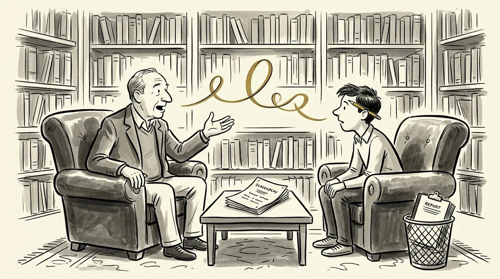

Script coverage, from the side of the desk that reads it
At the studios, coverage landed on my desk before the script did. Here's what's in it, what the verdict really means, and why I give mine in conversation instead of on paper.


What script coverage is
Script coverage is a professional reader's evaluation of a screenplay. It boils a 110-page script down to a few pages: what the story is, what works, what doesn't, and whether anyone further up the ladder should spend their time on it.
Coverage exists because of volume. Studios, agencies and production companies receive far more scripts than their executives could ever read. Readers cover the pile, and the executive reads the coverage first. As an executive at Touchstone/Disney, Paramount and Warner Bros., I read over 2,000 scripts. Coverage decided which ones made it to the top of the stack.
Today, writers also pay for coverage themselves, to find out how their script would fare in that pile before it gets there.
What's in a coverage report
Formats vary from company to company, but nearly every coverage report has the same core pieces.
- Title page: title, writer, genre, page count, setting, and who submitted it
- Logline: the story in one sentence
- Synopsis: a page or two summarizing the plot, ending included
- Comments: the reader's analysis of premise, structure, character, dialogue and marketability
- A ratings grid: often excellent, good, fair or poor for each element
- The verdict: pass, consider or recommend
If your logline is weak, the coverage logline will be weak too, and that's the first thing an executive reads. (More on that in how to write a logline.)
Pass, consider, recommend: what the verdict means
The verdict is the line everyone skips to.
- Pass means the reader doesn't think it's worth an executive's time. Most scripts get a pass.
- Consider means there's something here, a concept, a voice or a role, but the script isn't there yet.
- Recommend means read it now. Readers give it rarely, because a recommend puts their own judgment on the line.
Some reports split the verdict in two: one for the script and one for the writer. A script can be a pass while the writer is a consider. That's often the most useful thing coverage can tell you.
Script coverage vs. script notes
They overlap, but they're written for different people. Coverage is written for the buyer. It answers one question: is this worth our time? Notes are written for the writer. They answer a different one: how do I make this better?
Studio coverage was never meant to help you rewrite. It was meant to help an executive say no quickly. When you pay for coverage as a writer, you want both: the honest verdict a buyer would give, and the specific fixes that would change it.
Why I give script coverage verbally
I don't send a written report. I read every page, then we talk it through on a live call by Zoom or phone. It covers the same ground as written coverage, from premise and structure to character and dialogue, and how your script would land on an executive's desk.
I do it this way because a written report is a one-way street. You can't ask it what it meant. You can't push back, explain what you were going for, or test a fix on the spot. On a call you can do all three. Record it, so you have every word, and you leave with a plan for the next draft instead of a document to decode.
Coverage on paper tells you what's wrong. A conversation gets you to how to fix it.
Every page, read by me. No AI.
A growing number of coverage services run scripts through AI and send back a generated report. I don't. I read every page of your script myself: no readers, no assistants and no AI. Your script is never uploaded to an AI tool to be summarized or scored.
Machines can count pages and flag formatting. They can't tell you whether a scene works, whether a character earns the ending, or how a studio executive will react on page ten. That judgment is the whole point.
How to get the most out of coverage
- Send your best draft, not your first. Coverage on a draft you already know is broken spends money telling you what you know.
- Know your questions going in. If the second act sags or the ending isn't landing, say so. On a live call, we can go straight at it.
- Separate the note from the fix. A reader can be right that something's wrong and wrong about how to fix it. Take the diagnosis seriously; the prescription is yours.
- Look for patterns. One reader's opinion is an opinion. The same note from three readers is a problem.
Frequently asked questions
Do you give written coverage?
No. I give coverage verbally on a live call, after reading every page myself. You can record the call and ask follow-up questions as we go.
Do you use AI to read scripts?
No. I read every page myself and don't use AI to read, summarize or evaluate your script.
Is paid script coverage worth it?
It depends on who's reading. Coverage is only as good as the reader's judgment, so ask who will actually read your script and what they've done. A verdict from someone who has made buying decisions is worth more than one from someone who has only written reports.
How much does script coverage cost?
With me, feature screenplay notes are $600 and TV pilot notes are $400. Each includes a full read and a live notes call. Prices across the industry vary widely, so compare who's doing the reading, not just the price.
How long does it take?
It depends on the length of the material and my schedule. You'll get a firm date for your notes call when you book.